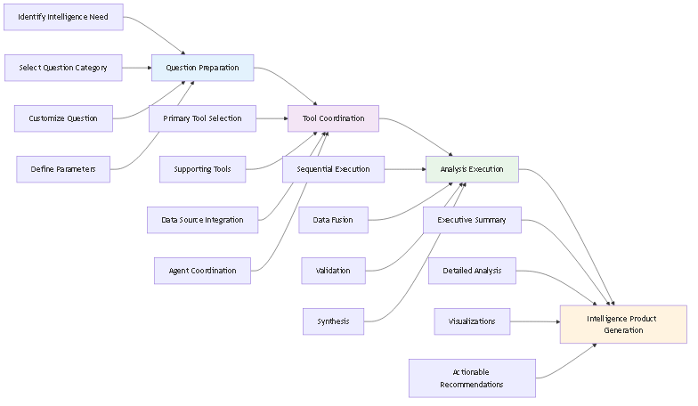
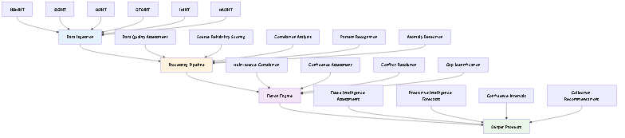
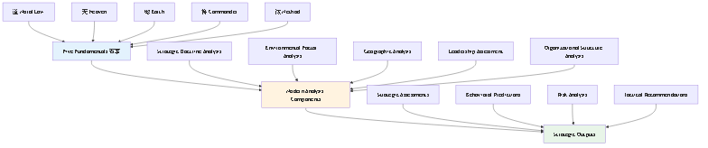
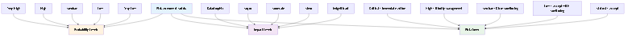
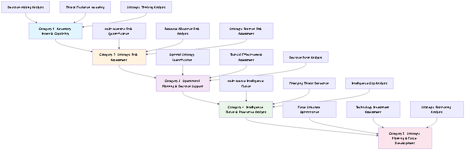
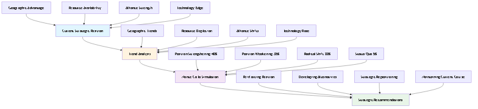

DIA3 Strategic Intelligence Question Framework
Mermaid Diagrams Demo
1. DIA3 System Architecture

Complete system architecture showing data flow from multiple sources through AI agents to analysis categories and output products.
2. Intelligence Framework Process

Four-step systematic process from intelligence requirement to actionable intelligence product.
3. Monte Carlo Simulation Process

Quantitative backbone showing input parameters, simulation engine, output analysis, and validation.
4. Intelligence Fusion Process

Multi-source intelligence fusion from HUMINT, SIGINT, OSINT, GEOINT, IMINT, and MASINT.
5. Art of War Integration Framework

Integration of Sun Tzu's Five Fundamentals (五事) with modern intelligence analysis.
6. Predictive Analysis Timeline

Timeline showing the complete predictive analysis process from data collection to recommendation generation.
7. Decision Tree Analysis

Structured decision-making framework for strategic decision points.
8. Risk Assessment Matrix

Visual framework for evaluating and prioritizing risks based on probability and impact.
9. Framework Categories Overview

Overview of the five framework categories and their relationships.
10. Threat Evolution Forecasting

Forecasting process combining historical data with current indicators to predict future threat developments.
11. Strategic Position Forecasting

Strategic position forecasting with Monte Carlo scenarios and strategic recommendations.
12. Predictive Intelligence Forecasting

Predictive intelligence forecasting process integrating multiple intelligence sources.
✅ All Mermaid Diagrams Successfully Generated!
The whitepaper now contains 12 comprehensive visualizations that demonstrate DIA3's capabilities.
File: DIA3_Strategic_Intelligence_Question_Framework_Whitepaper.md